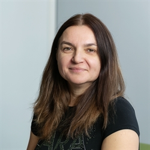
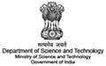
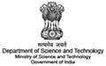
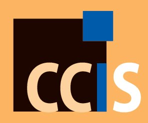

| WELCOME TO ATIS 2019 |
|---|
The 2019 International Conference on Applications and Technologies in Information Security (ATIS), will be the tenth (10th) event in the ATIS series, which started in 2010. The purpose of ATIS is to provide a forum for presentation and discussion of innovative ideas, research results, applications and experience from around the world. The annual ATIS conference highlights new results in the design and analysis of digital security hardware and software implementations. ATIS provides a valuable connection between the theoretical and implementation communities and attracts participants from industry, academia, and government organisations. As academic research in information security has developed over the last twenty or so years, applications and techniques are being developed to be of specific use in this area. These include wavelets and their application in digital forensics, classification algorithms for use in malicious software detection, and genetic algorithms custom-made for the cryptographic community, etc. ATIS 2019 focuses on all aspects on techniques and applications in information security. Accepted papers will appear in the proceedings to be published as Springer's Communications in Computer and Information Science Series (EI-indexed). ATIS 2019 CCIS Volume will be systematically submitted by Springer to various indexing services, including EI-Compendex, Scopus, SCImago, DBLP, Google Scholar, etc. |
| KEYNOTES |
|---|
 Prof. Aditya P. Mathur, Professor Emeritus of Computer Science,Purdue University, West Lafayette, IN, USA Professor and Center Director,iTrust and National Satellite of Excellence (DeST-SCI),SUTD, Singapore Prof. Kasi Periyasamy,Professor and MSE Program Director,University of Wisconsin-La Crosse,  Dr. Lejla Batina ,Professor in Digital Security,Institute for Computing and Information Sciences,Radboud University, The Netherlands |

| KEY DATES | |
|---|---|
11/07/2019 | |
| 04/08/2019 | |
| 11/07/2019 | |
| 11/07/2019 |
| SPONSORSHIP |
|---|
   |
| PUBLICATION |
|---|
 |
| PAST ATIS |
|---|
|